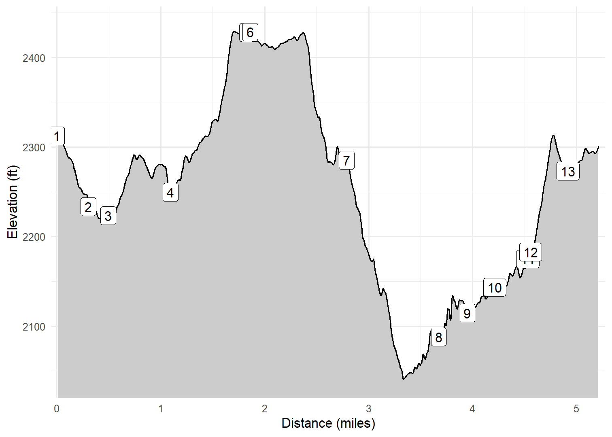

Hackberry Springs Loop
On February 24, 2023 Kim and I hiked the Hackberry Springs loop (from the First Water TH) on a beautiful sunny day. This loop was one of the first hikes we did five or so years ago. At that time we had very little experience and were navigating with a small map in a dated book. We completed the hike then but it was much more comfortable this time as we had more experience hiking in the desert and were using our Avenza. This is quite a beautiful trail, especially on the way down to and out of Hackberry Springs. My favorite part is the high bluffs along the stream.
Walk-Specific Map
See Superstition Wilderness Overview page for an overview map of all hikes.
Take Note
- Click on a segment to get specific information.
- Numeric labels correspond to the same labels in the elevation profile and summary information below.
- See Superstition Wilderness Overview page for description of use of controls.
Elevation Profile

Images

HKBY02: Field of flowers about to bloom

HKBY03: Typical scenery in Winter 2023

HKBY04: Garden Valley

HKBY05: Kim on the trail

HKBY05: Typical scenery in Winter 2023

HKBY05: Kim on the trail

HKBY06: Creek near campsite

HKBY06: Bluff along creek

HKBY06: Narrow draw to hike through

HKBY06: Kim scrambling through narrow draw

HKBY06: Narrow draw to hike through

HKBY07: Following dry creek bred after narrow draw

HKBY07: Kim following mostly dry creek bed

HKBY10: Horse corral

HKBY10: Tip of Weavers Needle in far distance
GPX Download
A sanitized GPX file of our hike is here.
Summary Information
| NUM | trackID | Primary | Description | Distance | CumDist | DeltaElev |
|---|---|---|---|---|---|---|
| 1 | HKBY01 | Hackberry Springs Hike (Second Waters Tr) | First Water TH to Dutchman's Tr (104) | 0.30 | 0.30 | -61 |
| 2 | HKBY02 | Hackberry Springs Hike (Second Waters Tr) | Dutchman's Tr (104) to Unnamed trail | 0.17 | 0.47 | -14 |
| 3 | HKBY03 | Hackberry Springs Hike (Second Waters Tr) | Unnamed trail to Black Mesa Tr (241) | 1.35 | 1.82 | 190 |
| 4 | HKBY04 | Hackberry Springs Hike (Second Waters Tr) | Black Mesa Tr (241) to leave Second Waters Tr | 0.03 | 1.85 | 0 |
| 5 | HKBY05 | Hackberry Springs Hike (Hackberry Springs Tr) | start Hackberry Springs Tr to Hackberry Springs campsite | 1.46 | 3.31 | -377 |
| 6 | HKBY06 | Hackberry Springs Hike (Hackberry Springs Tr) | Hackberry Springs campsite to leave Hackberry Springs Tr | 0.62 | 3.93 | 76 |
| 7 | HKBY07 | Hackberry Springs Hike (Hackberry Springs Alt Tr) | start Hackberry Springs Alt Tr to Unnamed trail | 0.25 | 4.18 | 18 |
| 8 | HKBY08 | Hackberry Springs Hike (Hackberry Springs Alt Tr) | Unnamed trail to Unnamed trail | 0.32 | 4.50 | 32 |
| 9 | HKBY09 | Hackberry Springs Hike (Hackberry Springs Alt Tr) | Unnamed trail to Horse corral | 0.03 | 4.53 | 8 |
| 10 | HKBY10 | Hackberry Springs Hike (Hackberry Springs Alt Tr) | Horse corral to leave Hackberry Springs Alt Tr | 0.36 | 4.89 | 90 |
| 11 | HKBY11 | Hackberry Springs Hike (FR78) | start FR78 to First Water TH | 0.31 | 5.19 | 36 |